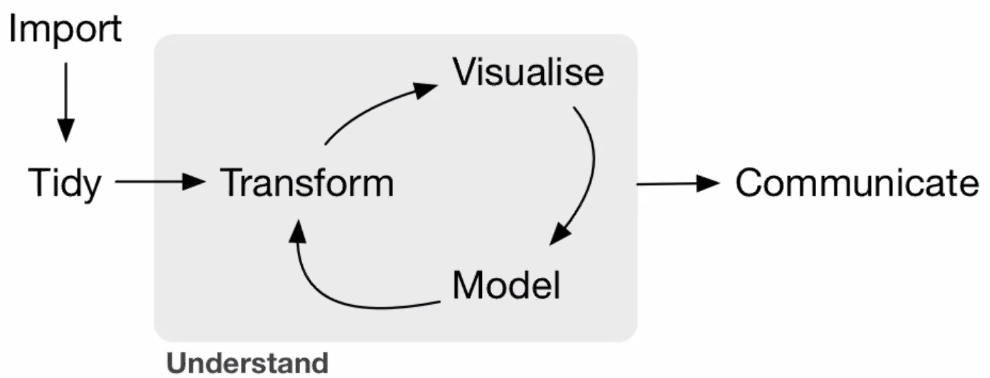

Proyecto RNA-seq
2021-03-01
Generalidades
Este proyecto busca retomar las herramientas y conocimientos recuperados en el curso de RNA-seq 2021 impartido por Leonardo Collado-Torres para los estudiantes de la Licenciatura en Ciencias Genómicas de la UNAM.
Ligas externas
Proyecto: Datos de SRP11148
El proyecto que elegí fue: “Transcriptomic and genomic profiling of early-stage ovarian carcinomas associated with histotype and overall survival [RNA-seq]” (ID: SRP11148), la elección fue basada únicamente en interés por el tema y número de muestras (n=96).
Abstract
“Ovarian cancer is the most lethal gynecological malignancy in the western world. Despite recent efforts to characterize ovarian cancer using molecular profiling, few targeted treatment options are currently available. Here, we examined genetic variants, fusion transcripts, SNP genotyping, and gene expression patterns for early-stage (I, II) ovarian carcinomas (n=96) in relation to clinicopathological characteristics and clinical outcome, thereby identifying novel genetic features of ovarian carcinomas. Furthermore, mutation frequencies of specific genetic variants and/or their gene expression patterns were associated with histotype and overall survival, e.g. SLC28A2 (mucinous ovarian carcinoma histotype), ARCN1 (low expression in 0-2 year survival group), and tumor suppressor MTUS1 (mutation status and overall survival). The long non-coding RNA MALAT1 was identified as a highly promiscuous fusion transcript in ovarian carcinoma. Moreover, gene expression deregulation for 23 genes was associated with tumor aggressiveness. Taken together, the novel biomarkers identified here may improve ovarian carcinoma subclassification and patient stratification according to histotype and overall survival. Overall design: Whole-transcriptome RNA sequencing (RNA-seq) was performed for 96 early-stage primary invasive ovarian carcinomas.”
0.1 Pipeline
A manera general el proyecto seguirá el siguiente esquema:
